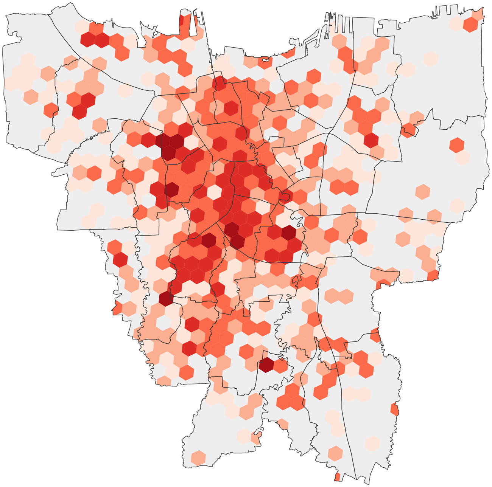
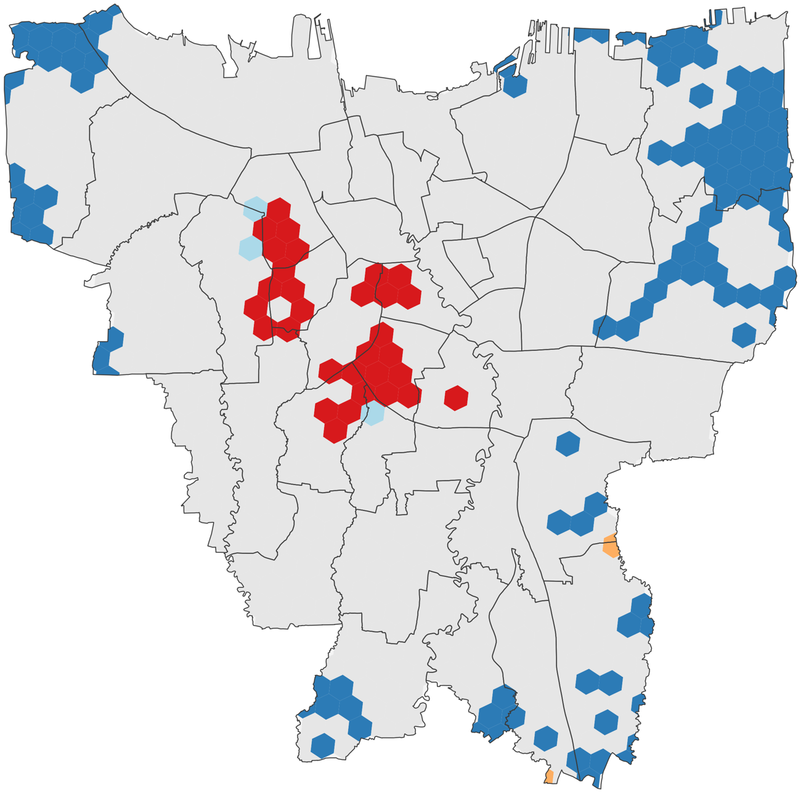
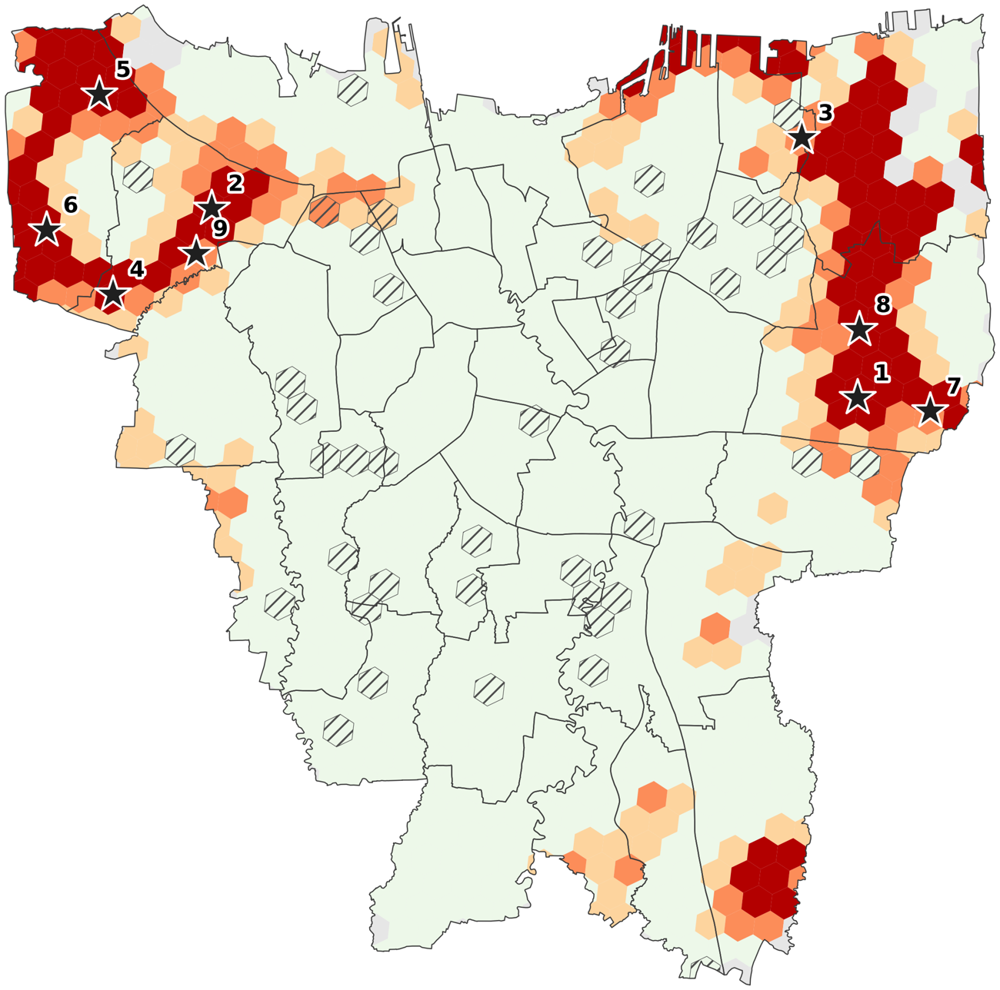

Atlas spasial · Jakarta · 2026
Atlas ini memetakan aset ekonomi kreatif Jakarta dari dua sumber data terbuka, OpenStreetMap dan Overture Maps, lalu mengukur seberapa mudah penduduk tiap kecamatan menjangkau ruang kreatif publik: panggung, galeri, bioskop, venue musik, perpustakaan, ruang kerja bersama, dan sejenisnya.
Data: OpenStreetMap (ODbL), Overture Maps (CDLA Permissive 2.0), WorldPop (CC-BY 4.0),
penduduk kecamatan Disdukcapil dan BPS · diakses Juli dan September 2026
Metode: Moran's I · LISA · DBSCAN · 2SFCA · MCLP
Peta skematik: setiap heksagon mewakili satu kecamatan, disusun mengikuti letak geografisnya. Peta sebenarnya ada di bagian Peta.
Temuan
Moran's I (ukuran autokorelasi spasial) kepadatan aset bernilai 0,368 pada OpenStreetMap dan 0,291 pada Overture Maps, keduanya dengan p ≤ 0,0001. Klaster tinggi terbanyak di Setiabudi, Kebayoran Baru, Tanah Abang, Menteng, Grogol Petamburan, dan Palmerah, sejalan dengan pusat industri kreatif menurut Sensus Ekonomi 2016 (Kurnia dkk., 2026).
| Skenario uji | Moran's I | p |
|---|
Klik baris untuk interpretasi tiap skenario
Nilai p dari uji permutasi (9.999 kali). Grid H3 resolusi 8 berukuran ±0,74 km² per sel.
Sekitar 85 persen aset kreatif adalah kafe dan restoran. OpenStreetMap mencatat 2.917 aset, atau sekitar 12 persen dari 25.320 aset di Overture Maps. Karena itu ukuran akses di atlas ini memakai gabungan kedua sumber.
Klik salah satu batang untuk interpretasi otomatis
Hampir semua penduduk memiliki toko atau studio kreatif dalam radius 1,5 km. Yang timpang adalah ruang kreatif publik: 90,1 per 100 ribu penduduk di Kebayoran Baru, tetapi hanya 5,9 di Kalideres. Sebanyak 1,77 juta penduduk (16,1 persen) memiliki akses rendah, yaitu tanpa ruang kreatif publik dalam 1,5 km atau dengan akses kurang dari separuh median kota (29,2 per 100 ribu penduduk).
Enam kecamatan konsisten masuk sembilan besar pada sekurang-kurangnya 80 persen dari 48 skenario sensitivity analysis (uji kepekaan): Cakung, Kalideres, Cengkareng, Cilincing, Cipayung, Tanjung Priok. Koja dan Ciracas menjadi prioritas lanjutan. Hanya 37 persen penduduk dengan akses rendah tinggal dalam 400 m dari halte, dibanding 66 persen seluruh penduduk.
Kenaikan 10 persen tempat usaha non-kreatif di suatu sel diikuti kenaikan sekitar 12,7 persen aset kreatif non-kuliner (elastisitas 1,27, negative binomial regression). Spesialisasi kreatif ada, tetapi lemah: Moran's I untuk pangsa aset non-kuliner hanya 0,073.
Profil kecamatan
Klik heksagon atau ketik nama kecamatan. Profil setiap wilayah disusun otomatis dari angkanya sendiri dan dibandingkan dengan angka kota.
Klaster aset kreatif
DBSCAN (Density-Based Spatial Clustering of Applications with Noise; pengelompokan berbasis kepadatan titik) menggabungkan aset yang saling berdekatan tanpa mengikuti batas administrasi. Radiusnya 400 meter, kira-kira lima menit berjalan kaki. Data: OpenStreetMap. Klaster terbesar belum tentu paling beragam.
Klik kartu klaster untuk interpretasi otomatis
Peta
Hasil analisis pada grid heksagon H3 resolusi 8 (917 sel, ±0,74 km² per sel) di 644 km² daratan Jakarta.



Prioritas dan lokasi Simpul Kreatif
Prioritas utama adalah kecamatan yang masuk sembilan besar penduduk dengan akses rendah pada sekurang-kurangnya 80 persen skenario; prioritas lanjutan 50 sampai 79 persen. Kekurangan ruang adalah perkiraan jumlah ruang kreatif publik tambahan agar akses setiap penduduk mencapai median kota.
Klik kartu kecamatan untuk interpretasi otomatis
Dipilih dengan maximal covering location problem (MCLP; memaksimalkan jumlah penduduk yang terjangkau) dari pasar, balai warga, dan kantor pemerintahan di OpenStreetMap, dengan radius layanan 1,5 km. Kesembilan lokasi menjangkau 48,9 persen penduduk dengan akses rendah, sekitar 853 ribu jiwa.
| No | Kecamatan | Lokasi usulan | Penduduk terjangkau | Ke halte | Ke stasiun |
|---|
Klik baris untuk interpretasi tiap lokasi usulan
Lokasi usulan adalah fasilitas terdekat di data OpenStreetMap. Gedung final ditetapkan melalui verifikasi lapangan. Jarak ke halte lebih dari 850 m ditandai warna.
Metode dan keterbatasan
Aset kreatif diambil dari OpenStreetMap dan Overture Maps Places, lalu diklasifikasikan ke 12 subsektor berbasis lokasi. Overture tidak memuat data OpenStreetMap, sehingga kedua sumber dapat saling menguji. Titik dari kedua sumber yang berjarak kurang dari 30 m dianggap aset yang sama. Penduduk diambil dari raster WorldPop 100 m dan dikalibrasi ke jumlah penduduk resmi setiap kecamatan (Disdukcapil 2025; BPS 2024 untuk Jakarta Utara).
Pola sebaran diuji dengan Moran's I (autokorelasi spasial) dan LISA (klaster lokal) pada grid H3 resolusi 8, dengan koreksi FDR (false discovery rate). Akses dihitung dengan 2SFCA (two-step floating catchment area) per piksel penduduk, termasuk aset dan penduduk di buffer (zona penyangga) 3 km di luar batas kota agar edge effect (efek tepi) tidak membesar-besarkan kekurangan di pinggiran. Lokasi Simpul Kreatif dipilih dengan MCLP (maximal covering location problem), dan ketahanan daftar prioritas diuji pada 48 skenario.
Keterbatasan: ruang kreatif informal seperti sanggar dan kampung kreatif belum tercatat di kedua sumber; Overture masih memuat sebagian entri ganda; jarak dihitung sebagai garis lurus; dan data penduduk Jakarta Utara memakai proyeksi BPS, sementara kota lain memakai registrasi Disdukcapil. Verifikasi lapangan, Potensi Desa (Podes), dan Sensus Ekonomi 2026 dapat melengkapi atlas ini.
Seluruh analisis memakai data berlisensi terbuka dan dapat dijalankan ulang. Notebook, tabel, dan catatan asal data (provenance) tersedia di repositori.